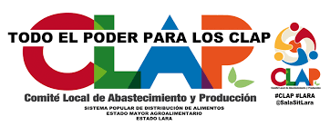

Promover y consolidar la democracia participativa y protagónica, mediante la promoción y el fortalecimiento de todos aquellos programas y proyectos comunitarios que propicien el ejercicio de la corresponsabilidad social en la gestión pública, para el fortalecimiento de las potencialidades y resolver los problemas de la comunidad.
Vision del Consejo Comunal
Obtener de todos los proyectos y programas desarrollados por el Consejo Comunal "Bicentenario" y de la comunidad en general, presentando los beneficios esperados por los mismos, y que genere la transformación de las personas que habitan la comunidad y de la infraestructura, para aumentar el avance y satisfacer todas las necesidades de todos, garantizando el bienestar integral procurando un desenvolvimiento sobre el desarrollo social, manteniendo la igualdad de condiciones que ejercen cada ciudadano en la comunidad.
Comite Local de Abastecimiento y Produccion

Los Comités Locales de Abastecimiento y Producción (CLAP) son comités de distribución de alimentos promovidos por el gobierno de Venezuela en los cuales las propias comunidades abastecen y distribuyen los alimentos prioritarios a través de una modalidad de entrega de productos casa por casa. La idea surge para hacer frente a la escasez de alimentos y la crisis económica del país.